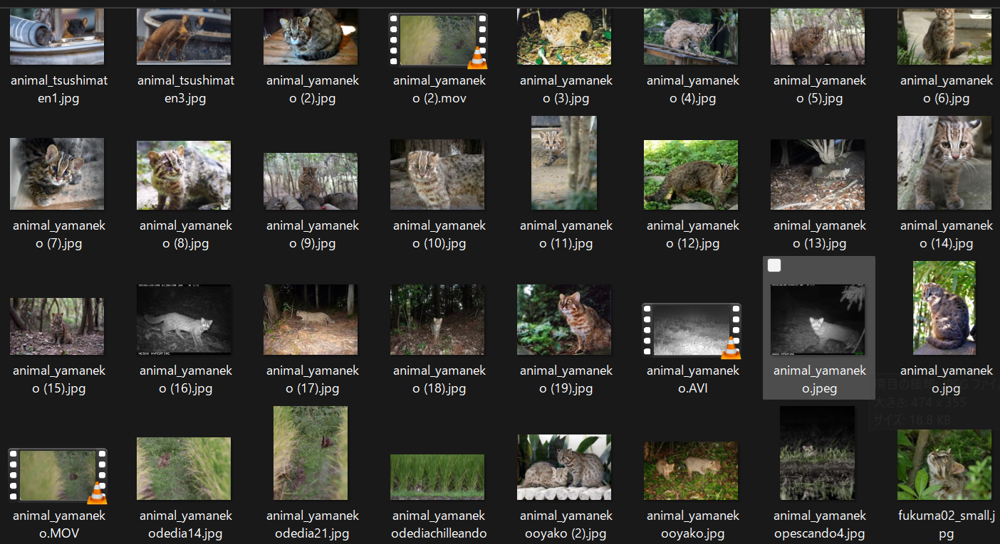

YOLOv5 + PyTorchで人/車/動物を検出。しきい値やフレーム間隔をGUIで調整。
ベスト/全検出フレーム保存、クロップ作成、タグで自動リネーム、未検出削除など。
VLC連携で再生・速度変更・前後移動・ファイル名変更などで動画の管理を更に速く。

カメラトラップやドローンで撮影した動画・画像をフォルダにまとめます。WildCatcherは複数フォルダのバッチ処理に対応。

フレーム間隔、しきい値、対象クラス（動物/人/車）をGUIから調整。現場例に基づく推奨設定もドキュメントに掲載。

解析結果は自動保存・自動リネーム。ログ/レポートも自動生成されます。
 佐護ヤマネコ稲作研究会
佐護ヤマネコ稲作研究会
ツシマヤマネコの生息域での映像解析・データ整理のために現場運用中。
現場導入 NHK ワークフロー
NHK ワークフロー
「ダーウィンが来た！」制作フローに導入・活用中。
導入 ダーウィンが来た！番組掲載
ダーウィンが来た！番組掲載
「ツシマヤマネコ特集（泳ぐ！狩る！日本の宝）」でWildCatcherが紹介されました。
メディア掲載 U22 プログラミング・コンテスト
U22 プログラミング・コンテスト
一次審査通過。
アワード